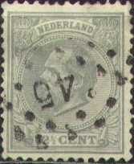
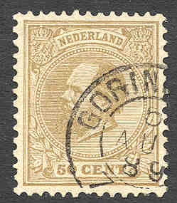
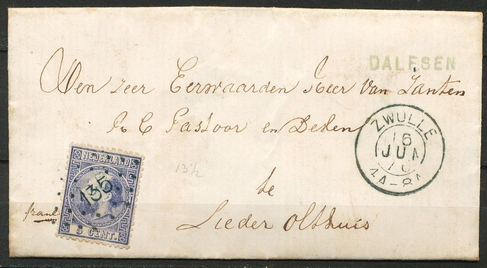
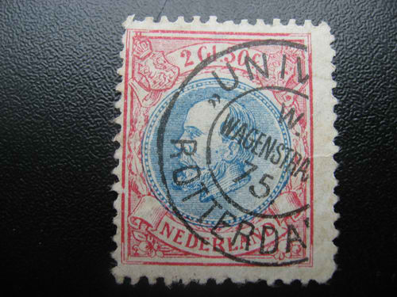
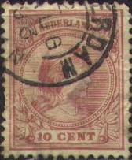
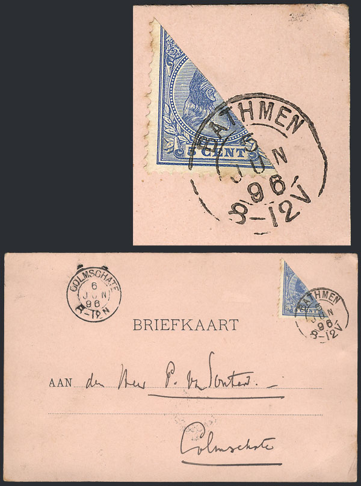
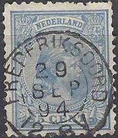
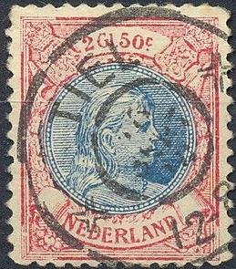

Nederland - Pays-Bas - Niederlande
Return To Catalogue - Issues of 1898-1906 - Issues from 1898 to 1920
Note: on my website many of the
pictures can not be seen! They are of course present in the
catalogue;
contact me if you want to purchase it.
Currency: 100 Cent = 1 Gulden






5 c blue 7 1/2 c brown (1888) 10 c red 12 1/2 c grey (1875) 15 c brown 20 c green 22 1/2 c green (1888) 25 c lilac 50 c brown 1 G violet (1888) Larger size
2 G 50 c red and blue
These stamps exist with many different perforations. The first stamps appeared on 1 July 1872.
Value of the stamps |
|||
vc = very common c = common * = not so common ** = uncommon |
*** = very uncommon R = rare RR = very rare RRR = extremely rare |
||
| Value | Unused | Used | Remarks |
| 5 c | c | vc | |
| 7 1/2 c | * | * | |
| 10 c | * | c | |
| 12 1/2 c | ** | c | |
| 15 c | *** | c | |
| 20 c | *** | c | |
| 22 1/2 c | *** | *** | |
| 25 c | *** | c | |
| 50 c | *** | * | |
| 1 G | *** | ** | |
| 2 G 50 c | R | *** | |
Postal stationary in the 5 c blue design.

Besides numeral cancels, double ring cancels with a cityname also
exist, here a railway cancel "AMSTERD. ANTW. IX" from
1890. Besides it much rarer linear townname cancels, here
"BEEKBERGEN" and "VEESSEN".


Forgery (more a dealer label probably) with cancel "UNIV..
W. WAGENSTRAAT 75 ROTTERDAM"
20 c design with "PAYS BAS" oveprinted. This is a cut
from a souvenir card.
1/2 c red 1 c green 2 c yellow 2 1/2 c lilac
These stamps exist with many perforations and were issued in January 1876.
Value of the stamps |
|||
vc = very common c = common * = not so common ** = uncommon |
*** = very uncommon R = rare RR = very rare RRR = extremely rare |
||
| Value | Unused | Used | Remarks |
| 1/2 c | c | vc | |
| 1 c | c | vc | |
| 2 c | c | c | |
| 2 1/2 c | c | vc | |
Postal stationary exist of the 2 1/2 c lilac value.



3 c orange 5 c blue 7 1/2 c brown 10 c red 12 1/2 c grey 15 c brown 20 c green 22 1/2 c green 25 c lilac 50 c brown 1 G violet Larger size and two colors
50 c green and brown 1 G brown and green 2 G 50 c red and blue 5 G green and brown
A very rare misprint 5 c orange (instead of blue) exist.
Value of the stamps |
|||
vc = very common c = common * = not so common ** = uncommon |
*** = very uncommon R = rare RR = very rare RRR = extremely rare |
||
| Value | Unused | Used | Remarks |
| 3 c | c | c | |
| 5 c | c | vc | |
| 7 1/2 c | * | c | |
| 10 c | * | vc | |
| 12 1/2 c | * | c | |
| 15 c | ** | * | |
| 20 c | ** | c | |
| 22 1/2 c | ** | ** | |
| 25 c | ** | c | |
| 50 c brown | *** | * | |
| 50 c green and brown | *** | * | larger size |
| 1 G violet | *** | *** | |
| 1 G brown and green | *** | *** | larger size |
| 2 G 50 c | R | *** | |
| 5 G | RR | RR | |

5 c blue postal stationary in the same design.

Railway cancel 'UTRECHT-BOKSTEL'


A forgery of the 2G50c stamp exists and usually has the cancel "'T LOO":


'T LOO forgeries of the 2.50 G value

The same forgery with a "TIEL" cancel.

Forgery (actually a dealer advertisement) of the 50 c value with
cancel 'P.BLAD UTRECHT 1887 1912' to commemorate the 25 year
existence of the P.Blad company.
Similar reproductions of the 50 c and 2.50 G exist with the cancel "BERLINER ETIKETTENFABRIK AMSTERDAM" and an unreadable date in the center (sorry, no image available yet).
A forgery of the 5 G value was made by the forger
Lucien Smeets (from Brussels, Belgium).
Smeets used the double circle cancel "SITTARD 24 MEI 07 1-2
N". See also www.bondskeuringsdienst.nl/hh48.pdf.
Other forgeries listed in the book by P.v.d. Loo on forgeries
are:
A 5 G forgery with cancel "Scheveningen Kurhaus 5 Juli
1920"
A 5 c blue (imperforate) with cancel "Amsterdam 31 AUG
1893"
A 5 c orange with "Rootlieb & Co Rokin 4 Amsterdam
Postzegel handel in en verkoop" (advertisement label).

Sold as a genuine stamps for 117 Euros, but it looks like a
photographic forgery to me.

A Zechmeyer forgery of the 5 c value in mirror image.

Another strange product with the face of the Queen different.
Probably issued for some commemorative purposes, since the cancel
date "31 AUG. 1898" corresponds to the 18th birthday of
the Queen.
For stamps issued from 1898 to 1920 click here.
gestempeld = cancelled
getand = perforated
herdruk = reprint
kopdruk = inverted print
nadruk = reprint
Nederland = The Netherlands
ongetand = imperforate
plakker = hinge
postfris = unused with no hinge
postzegel = stamp
samenhangend = se-tenant
stempel = cancel
tanding = perforation
te betalen port = to be paid (text on postage due stamps)
vals = forged
vervalsing = forgery
verzamelen = to collect
verzameling = collection
voor het kind = child welfare stamps ('for the child')
Recently (2005), a lot of so-called 'facsimiles' are offered on Internet auctions of many stamps of the Netherlands and Netherlands Indies, examples of such 'fac similes':

Even facsimiles of proofs are offered, reduced sizes
www.verzamel.com, www.postzegels.net: stamp auctions and lots of information.
Stamps - Postzegels - Briefmarken - Timbres-Poste


{kind=link}
{kind=link}
{kind=link}
{kind=link}